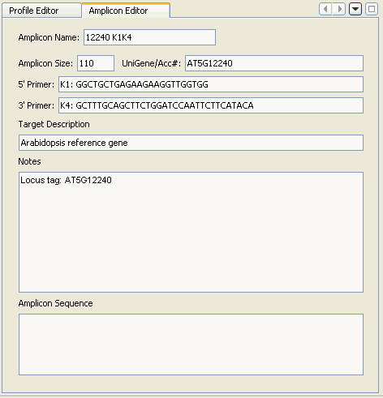

Selecting the Amplicon Database Window will trigger the Amplicon Edit Window to appear within the Editor Panel:

This panel allows editing of the information associated with a selected amplicon. Note however, that a unique amplicon name, along with the amplicon size must be provided, as these are required for retrieving amplicon sizes during importing of profiles into both the Experiment and Calibration databases. Note also that changes are immediately saved to disk, and that there is no undo function.
Additional details about the Amplicon Editor are provided in the Amplicon Database Window page.